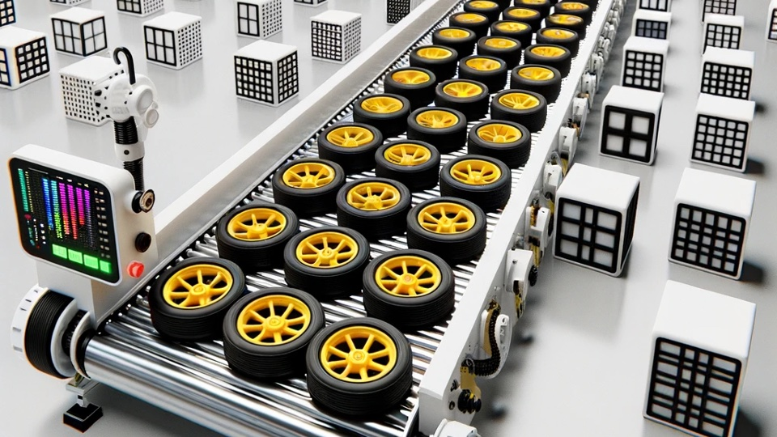
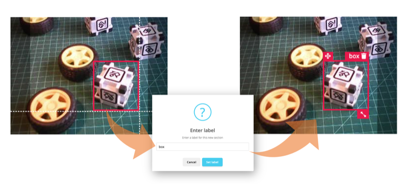
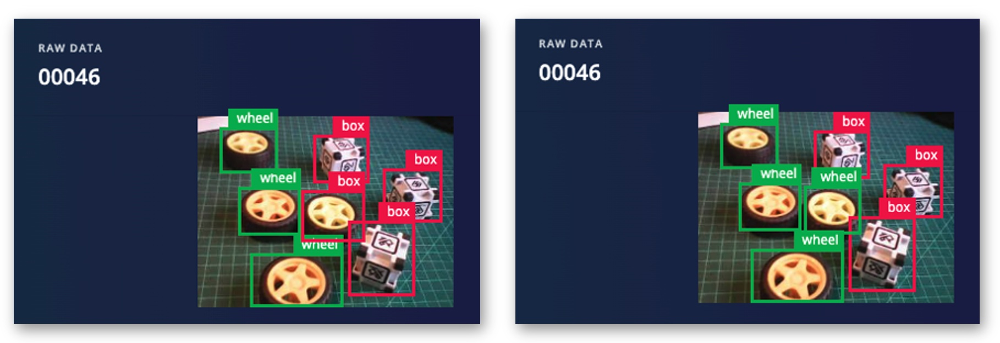
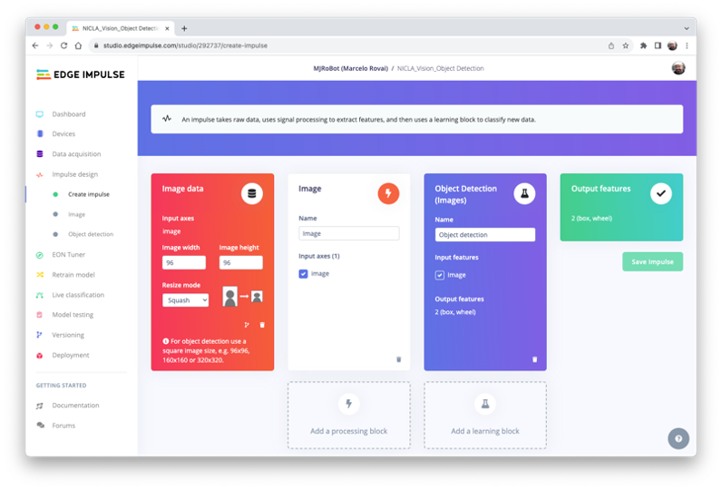
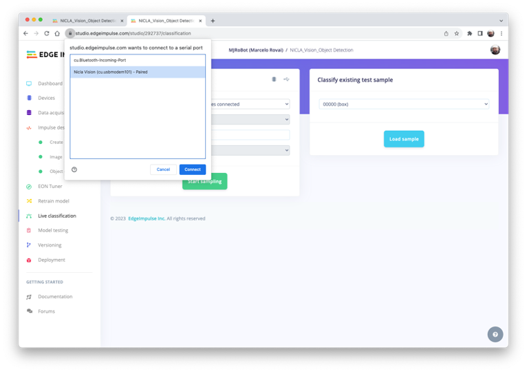
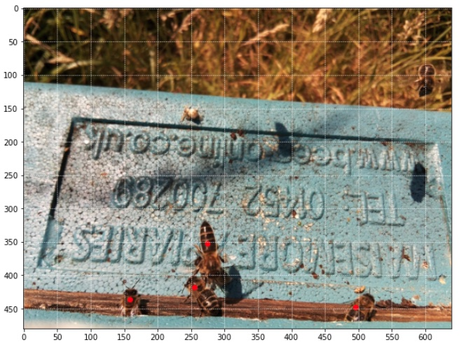

Rilevamento degli Oggetti

Introduzione
Questo è il seguito di CV su Nicla Vision, che ora esplora l’Object Detection sui microcontrollori.
Object Detection e Image Classification
Il compito principale dei modelli di Image Classification [classificazione delle immagini] è quello di produrre un elenco delle categorie di oggetti più probabili presenti in un’immagine, ad esempio, per identificare un gatto soriano subito dopo cena:

Ma cosa succede quando il gatto salta vicino al bicchiere di vino? Il modello riconosce ancora solo la categoria predominante nell’immagine, il gatto soriano:

E cosa succede se non c’è una categoria dominante nell’immagine?
Il modello identifica l’immagine soprastante in modo completamente sbagliato come un “ashcan” [?pattumiera?], probabilmente a causa delle tonalità di colore.
Il modello utilizzato in tutti gli esempi precedenti è MobileNet, addestrato con un ampio set di dati, la ImageNet.
Per risolvere questo problema, abbiamo bisogno di un altro tipo di modello, in cui non solo possono essere trovate più categorie (o etichette), ma anche dove si trovano gli oggetti in una determinata immagine.
Come possiamo immaginare, tali modelli sono molto più complicati e più grandi, ad esempio, MobileNetV2 SSD FPN-Lite 320x320, addestrato con il set di dati COCO. Questo modello di rilevamento degli oggetti pre-addestrato è progettato per individuare fino a 10 oggetti all’interno di un’immagine, generando un riquadro di delimitazione per ogni oggetto rilevato. L’immagine sottostante è il risultato di un tale modello in esecuzione su un Raspberry Pi:
Quei modelli utilizzati per il rilevamento degli oggetti (come MobileNet SSD o YOLO) hanno solitamente dimensioni di diversi MB, il che è OK per l’uso con Raspberry Pi ma non adatto per l’uso con dispositivi embedded, dove la RAM solitamente è inferiore a 1 M Byte.
Una soluzione innovativa per il rilevamento degli oggetti: FOMO
Edge Impulse ha lanciato nel 2022 FOMO (Faster Objects, More Objects), una nuova soluzione per eseguire il rilevamento di oggetti su dispositivi embedded, non solo su Nicla Vision (Cortex M7) ma anche su CPU Cortex M4F (serie Arduino Nano33 e OpenMV M4) e sui dispositivi Espressif ESP32 (ESP-CAM e XIAO ESP32S3 Sense).
In questo esercizio pratico, esploreremo l’uso di FOMO con Object Detection, senza entrare in molti dettagli sul modello stesso. Per saperne di più su come funziona il modello, si può esaminare l’annuncio ufficiale FOMO di Edge Impulse, dove Louis Moreau e Mat Kelcey spiegano in dettaglio come funziona.
Obiettivo del Progetto di Object Detection
Tutti i progetti di apprendimento automatico devono iniziare con un obiettivo dettagliato. Supponiamo di trovarci in una struttura industriale e di dover ordinare e contare ruote e scatole speciali.

In altre parole, dovremmo eseguire una classificazione multi-etichetta, in cui ogni immagine può avere tre classi:
Background [Sfondo] (nessun oggetto)
Box [Scatola]
Wheel [Ruota]
Ecco alcuni campioni di immagini non etichettate che dovremmo usare per rilevare gli oggetti (ruote e scatole):

Siamo interessati a quale oggetto è presente nell’immagine, alla sua posizione (centroide) e a quanti ne possiamo trovare su di essa. La dimensione dell’oggetto non viene rilevata con FOMO, come con MobileNet SSD o YOLO, in cui il Bounding Box è uno degli output del modello.
Svilupperemo il progetto utilizzando Nicla Vision per l’acquisizione di immagini e l’inferenza del modello. Il progetto ML verrà sviluppato utilizzando Edge Impulse Studio. Ma prima di iniziare il progetto di “object detection” in Studio, creiamo un dataset grezzo (non etichettato) con immagini che contengono gli oggetti da rilevare.
Raccolta Dati
Possiamo utilizzare Edge Impulse Studio, OpenMV IDE, il telefono o altri dispositivi per l’acquisizione delle immagini. Qui, utilizzeremo di nuovo OpenMV IDE per il nostro scopo.
Raccolta del Dataset con OpenMV IDE
Per prima cosa, si crea sul computer una cartella in cui verranno salvati i dati, ad esempio “data”. Quindi, su OpenMV IDE, si va in “Tools > Dataset Editor” e si seleziona “New Dataset” per avviare la raccolta di dati:
Edge impulse suggerisce che gli oggetti dovrebbero essere di dimensioni simili e non sovrapposti per prestazioni migliori. Questo va bene in una struttura industriale, dove la telecamera dovrebbe essere fissa, mantenendo la stessa distanza dagli oggetti da rilevare. Nonostante ciò, proveremo anche con dimensioni e posizioni miste per vedere il risultato.
Non creeremo cartelle separate per le nostre immagini perché ciascuna contiene più etichette.
Si collega Nicla Vision a OpenMV IDE e si esegue dataset_capture_script.py. Cliccando sul pulsante “Capture Image” inizierà l’acquisizione delle immagini:
Suggeriamo circa 50 immagini che mescolano gli oggetti e variano il numero di ciascuno che appare sulla scena. Provare ad acquisire con diverse angolazioni, sfondi e condizioni di luce.
Le immagini memorizzate utilizzano una dimensione del fotogramma QVGA 320x240 e RGB565 (formato pixel a colori).
Dopo aver acquisito il dataset, si chiude il Tool Dataset Editor su Tools > Dataset Editor.
Edge Impulse Studio
Setup del progetto
Si va su Edge Impulse Studio, si inseriscono le proprie credenziali in Login (o si crea un account) e si avvia un nuovo progetto.

Qui si può clonare il progetto sviluppato per questa esercitazione pratica: NICLA_Vision_Object_Detection.
Nella “Project Dashboard”, si va in basso e su Project info e si seleziona Bounding boxes (object detection) e Nicla Vision come “Target Device”:
Caricamento dei dati non etichettati
Su Studio, si va alla scheda Data acquisition e nella sezione UPLOAD DATA, si caricano dal computer i file acquisiti.
Si può lasciare che Studio divida automaticamente i dati tra “Train” e “Test” o farlo manualmente.
Tutte le immagini non etichettate (51) sono state caricate, ma devono comunque essere etichettate in modo appropriato prima di utilizzarle come set di dati nel progetto. Lo Studio ha uno strumento per questo scopo, che si trova al link Labeling queue (51).
Ci sono due modi per eseguire l’etichettatura assistita dall’IA su Edge Impulse Studio (versione gratuita):
- Utilizzando yolov5
- Tracciando di oggetti tra i frame
Edge Impulse ha lanciato una funzione di auto-labeling per i clienti Enterprise, semplificando le attività di etichettatura nei progetti di rilevamento degli oggetti.
Gli oggetti ordinari possono essere rapidamente identificati ed etichettati utilizzando una libreria esistente di modelli di rilevamento degli oggetti pre-addestrati da YOLOv5 (addestrati con il set di dati COCO). Ma poiché, nel nostro caso, gli oggetti non fanno parte dei set di dati COCO, dovremmo selezionare l’opzione di tracking objects. Con questa opzione, una volta disegnati i riquadri di delimitazione ed etichettate le immagini in un frame, gli oggetti verranno tracciati automaticamente da un frame all’altro, etichettando parzialmente quelli nuovi (non tutti sono etichettati correttamente).
Si può usare EI uploader per importare i dati se si ha già un dataset etichettato contenente dei “bounding box”.
Etichettatura del Dataset
Iniziando dalla prima immagine dei dati non etichettati, si usa il mouse per trascinare una casella attorno a un oggetto per aggiungere un’etichetta. Poi si clicca su Save labels per passare all’elemento successivo.

Si continua con questo processo finché la coda non è vuota. Alla fine, tutte le immagini dovrebbero avere gli oggetti etichettati come i campioni sottostanti:
Poi, si esaminano i campioni etichettati nella scheda Data acquisition. Se un’etichetta è sbagliata, la si può modificare usando il menù three dots dopo il nome del campione:
Si verrà guidati a sostituire l’etichetta sbagliata, correggendo il dataset.

Impulse Design
In questa fase, si deve definire come:
Il Pre-processing consiste nel ridimensionare le singole immagini da
320 x 240a96 x 96e nel comprimerle (forma quadrata, senza ritaglio). Successivamente, le immagini vengono convertite da RGB a scala di grigi.Design a Model, in questo caso, “Object Detection”.

Pre-elaborazione di tutti i dataset
In questa sezione, si seleziona Color depth come Grayscale, che è adatta per l’uso con modelli FOMO e Save parameters.
Lo Studio passa automaticamente alla sezione successiva, Generate features, dove tutti i campioni saranno pre-elaborati, con conseguente set di dati con singole immagini 96x96x1 o 9.216 “feature”.
L’esploratore di feature mostra che tutti i campioni evidenziano una buona separazione dopo la generazione delle feature.
Uno dei campioni (46) apparentemente si trova nello spazio sbagliato, ma cliccandoci sopra si può confermare che l’etichettatura è corretta.
Progettazione, Addestramento e Test del Modello
Useremo FOMO, un modello di rilevamento degli oggetti basato su MobileNetV2 (alpha 0.35) progettato per segmentare grossolanamente un’immagine in una griglia di background rispetto a oggetti di interesse (in questo caso, scatole e ruote).
FOMO è un modello di apprendimento automatico innovativo per il rilevamento degli oggetti, che può utilizzare fino a 30 volte meno energia e memoria rispetto ai modelli tradizionali come Mobilenet SSD e YOLOv5. FOMO può funzionare su microcontrollori con meno di 200 KB di RAM. Il motivo principale per cui ciò è possibile è che mentre altri modelli calcolano le dimensioni dell’oggetto disegnando un quadrato attorno ad esso (bounding box), FOMO ignora le dimensioni dell’immagine, fornendo solo le informazioni su dove si trova l’oggetto nell’immagine, tramite le coordinate del centroide.
Come funziona FOMO?
FOMO prende l’immagine in scala di grigi e la divide in blocchi di pixel usando un fattore di 8. Per l’input di 96x96, la griglia è 12x12 (96/8=12). Successivamente, FOMO eseguirà un classificatore attraverso ogni blocco di pixel per calcolare la probabilità che ci sia una scatola o una ruota in ognuno di essi e, successivamente, determinerà le regioni che hanno la più alta probabilità di contenere l’oggetto (se un blocco di pixel non ha oggetti, verrà classificato come background). Dalla sovrapposizione della regione finale, FOMO fornisce le coordinate (relative alle dimensioni dell’immagine) del centroide di questa regione.

Per l’addestramento, dovremmo selezionare un modello pre-addestrato. Usiamo FOMO (Faster Objects, More Objects) MobileNetV2 0.35. Questo modello utilizza circa 250 KB di RAM e 80 KB di ROM (Flash), che si adatta bene alla nostra scheda poiché ha 1 MB di RAM e ROM.
Per quanto riguarda gli iperparametri di training, il modello verrà addestrato con:
- Epochs: 60,
- Batch size: 32
- Learning Rate: 0.001.
Per la convalida durante l’addestramento, il 20% del set di dati (validation_dataset) verrà risparmiato. Per il restante 80% (train_dataset), applicheremo il “Data Augmentation”, che capovolgerà casualmente, cambierà le dimensioni e la luminosità dell’immagine e le ritaglierà, aumentando artificialmente il numero di campioni sul set di dati per l’addestramento.
Di conseguenza, il modello termina con praticamente 1,00 nel punteggio F1, con un risultato simile quando si utilizzano i dati di test.
Notare che FOMO ha aggiunto automaticamente una terza etichetta di background [sfondo] ai due precedentemente definiti (box e wheel).
Nelle attività di rilevamento degli oggetti, l’accuratezza non è generalmente la evaluation metric primaria. Il rilevamento degli oggetti comporta la classificazione degli oggetti e la fornitura di riquadri di delimitazione attorno a essi, il che lo rende un problema più complesso della semplice classificazione. Il problema è che non abbiamo il riquadro di delimitazione, solo i centroidi. In breve, usare l’accuratezza come metrica potrebbe essere fuorviante e potrebbe non fornire una comprensione completa delle prestazioni del modello. Per questo motivo, useremo il punteggio F1.
Modello di test con “Live Classification”
Dato che Edge Impulse supporta ufficialmente Nicla Vision, colleghiamolo allo Studio. Per farlo, si seguono i passaggi:
Si effettua il download dell’last EI Firmware e lo si decomprime.
Si apre il file zip sul computer e si seleziona l’uploader relativo al proprio sistema operativo:
Mettere Nicla-Vision in “Boot Mode”, premendo due volte il pulsante di reset.
Eseguire il codice batch specifico per il sistema operativo per caricare il binario (
arduino-nicla-vision.bin) sulla board.
Si va nella sezione Live classification su EI Studio e, tramite webUSB, si connette la Nicla Vision:

Una volta connessa, si può usare la Nicla per catturare immagini reali da testare col modello addestrato su Edge Impulse Studio.
Una cosa da notare è che il modello può produrre falsi positivi e falsi negativi. Questo può essere ridotto al minimo definendo una Confidence Threshold [Soglia di confidenza] (si usa il menù Three dots [tre-punti] per la configurazione). Provare con 0,8 o più.
Distribuzione del Modello
Selezionare OpenMV Firmware nella scheda Deploy e premere [Build].
Quando si connette di nuovo Nicla con OpenMV IDE, proverà ad aggiornarne il FW. Scegliere invece l’opzione Load a specific firmware.
Si troverà un file ZIP sul computer dallo Studio. Lo si apre:
Caricare il file .bin sulla board:

Una volta terminato il download, verrà visualizzato un messaggio pop-up. Premere OK e aprire lo script ei_object_detection.py scaricato da Studio.
Prima di eseguire lo script, modifichiamo alcune righe. Notare che si può lasciare la definizione della finestra come 240 x 240 e la telecamera che cattura le immagini come QVGA/RGB. L’immagine catturata verrà pre-elaborata dal FW distribuito da Edge Impulse
# Edge Impulse - OpenMV Object Detection Example
import sensor, image, time, os, tf, math, uos, gc
sensor.reset() # Reset and initialize the sensor.
sensor.set_pixformat(sensor.RGB565) # Set pixel format to RGB565 (or GRAYSCALE)
sensor.set_framesize(sensor.QVGA) # Set frame size to QVGA (320x240)
sensor.set_windowing((240, 240)) # Set 240x240 window.
sensor.skip_frames(time=2000) # Let the camera adjust.
net = None
labels = None```
Ridefinire la confidenza minima, ad esempio, a 0,8 per ridurre al minimo i falsi positivi e negativi.
```python
min_confidence = 0.8```
Se necessario, modificare il colore dei cerchi che saranno utilizzati per visualizzare il centroide dell'oggetto rilevato per un contrasto migliore.
```python
try:
# Load built in model
labels, net = tf.load_builtin_model('trained')
except Exception as e:
raise Exception(e)
colors = [ # Add more colors if you are detecting more than 7 types of classes at once.
(255, 255, 0), # background: yellow (not used)
( 0, 255, 0), # cube: green
(255, 0, 0), # wheel: red
( 0, 0, 255), # not used
(255, 0, 255), # not used
( 0, 255, 255), # not used
(255, 255, 255), # not used
]Mantenere il codice restante così com’è e premere il pulsante Play verde per eseguire il codice:
Nella vista della telecamera, possiamo vedere gli oggetti con i loro centroidi contrassegnati con 12 cerchi pixel-fixed (ogni cerchio ha un colore distinto, a seconda della sua classe). Sul terminale seriale, il modello mostra le etichette rilevate e la loro posizione sulla finestra dell’immagine (240X240).
Attenzione l’origine delle coordinate è nell’angolo in alto a sinistra.
Notare che la frequenza dei fotogrammi al secondo è di circa 8 fps (simile a quella ottenuta con il progetto Image Classification). Ciò accade perché FOMO è intelligentemente costruito su un modello CNN, non con un modello di rilevamento degli oggetti come SSD MobileNet. Ad esempio, quando si esegue un modello MobileNetV2 SSD FPN-Lite 320x320 su un Raspberry Pi 4, la latenza è circa 5 volte superiore (circa 1,5 fps)
Ecco un breve video che mostra i risultati dell’inferenza:
Conclusione
FOMO è un salto significativo nello spazio di elaborazione delle immagini, come hanno affermato Louis Moreau e Mat Kelcey durante il suo lancio nel 2022:
FOMO è un algoritmo rivoluzionario che porta per la prima volta il rilevamento, il tracciamento e il conteggio degli oggetti in tempo reale sui microcontrollori.
Esistono molteplici possibilità per esplorare il rilevamento degli oggetti (e, più precisamente, il loro conteggio) su dispositivi embedded, ad esempio, per esplorare la il raggruppamento di sensori (telecamera + microfono) e il rilevamento degli oggetti di Nicla. Questo può essere molto utile nei progetti che coinvolgono le api, ad esempio.
